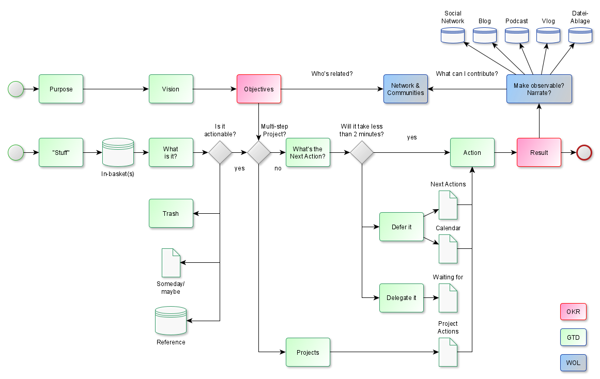
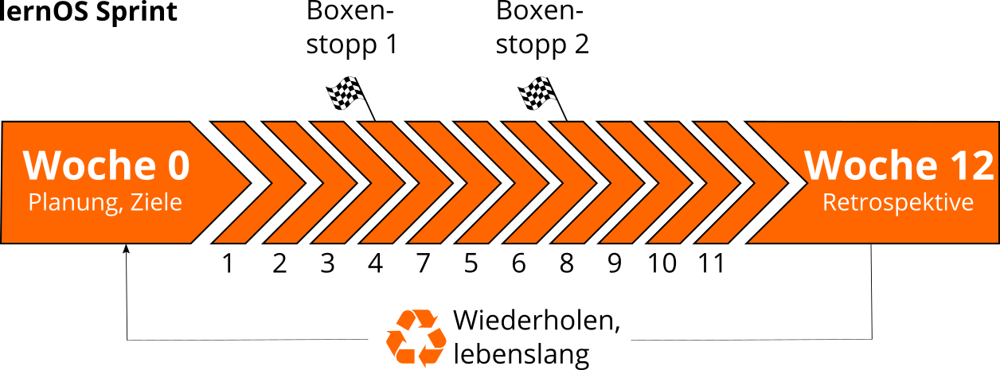
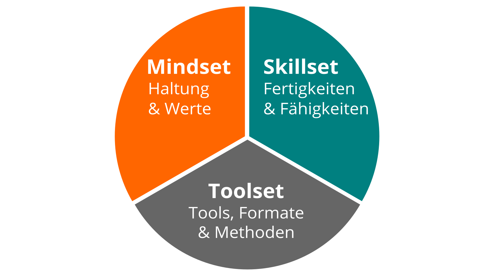
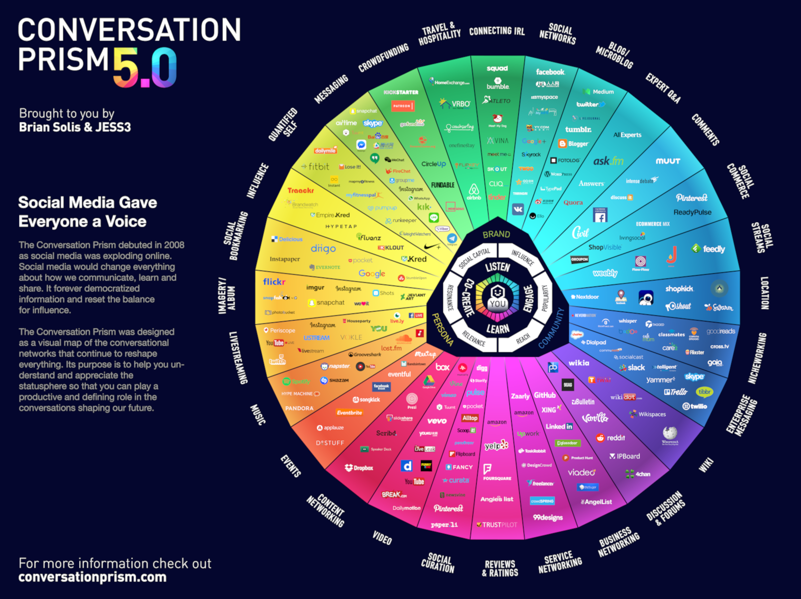

Grundlagen
Wissensgesellschaft, Lebenslanges Lernen und Wissensarbeit
Wissensgesellschaft - vom 20. ins 21. Jahrhundert
Gesellschaftlicher Wandel vollzog sich in Vergangenheit sehr langsam. Übergänge von Jäger-und-Sammlergemeinschaften zur Agrargesellschaft (9.500 v.Chr.) und von Agrargesellschaft zu Industriegesellschaft (19. Jahrhundert) dauerten mindestens Jahrhunderte. Während dieser Zeiträume waren bestehende Regeln und Normen einigermaßen stabil.
Aktuell befinden wir uns im Übergang von Industrie- zur Wissensgesellschaft, die dadurch gekennzeichnet ist, dass Regeln und Normen durch Lernprozesse kontinuierlich in Frage gestellt werden (s.a. Heidenreich, M.: Merkmale der Wissensgesellschaft). Ereignisse wie die Aufklärung, die Etablierung von allgemeiner Schulbildung und Universitäten, die Steigende Bedeutung der Wissenschaft, die Professionalisierung von Berufen, Globalisierung und die Digitalisierung beschleunigen diese Veränderung.
Lebenslanges Lernen - von der Wiege bis zur Bahre
Der gesellschaftliche Wandel zur Wissensgesellschaft führt zu einer hohen Dynamik der "Wissensproduktion" in vielen Bereichen. Das kann mit der Kurve der Halbwertzeit des Wissens dargestellt werden. Bleiben Bereiche wie das Schulwissen einigermaßen stabil, ist der Bedarf neues zu Lernen besonders im Technik- und IT-Bereich besonders groß.

Das bedeutet für die Bürger einer Gesellschaft, dass sie sich auch nach absolvierter Ausbildung durch Schule und Hochschule kontinuierlich weiterbilden sollten, um nicht den Anschluss zu verlieren. Diesen Lernprozess von Geburt bis zum Tod bezeichnet man als lebensbegleitendes oder lebenslanges Lernen. Bis zur ersten Ausbildung kümmern sich in den meisten Fällen Eltern und Staat um das Lernen, danach muss man es für sich selbst organisieren.
Wissensarbeit - das Lernen hört nach der Ausbildung nicht auf
In einem typischen Lebenslauf folgt auf die Phase der Ausbildung das Ergreifen einer Arbeit in Form von abhängiger Beschäftigung in einer Organisation oder selbstständiger Arbeit. Im frühen 20. Jahrhundert hat Frederick W. Taylor mit dem Taylorismus bzw. dem Scientific Management eine Form der Arbeitsorganisation entwickelt, in der die Kopfarbeit von der Handarbeit getrennt ist.
In der Praxis bedeutet das, dass Manager oder Führungskräfte Ziele und den besten Weg der Zielerreichung überlegen und die Ausführung der Arbeit dann den Arbeitern überlassen. Um mit schlecht ausgebildeten Arbeitern Ergebnisse in hoher Stückzahl und guter Qualität erzeugen zu können, verwendet man Arbeitsteilung, um den Gesamtprozess in leicht zu erlernende Tätigkeiten aufzuteilen. Diese Praxis der Massenproduktion brachte eine großen Gewinn an Produktivität, führte aber auch zu einer "Entmenschlichung" der Arbeit und in Folge z.B. zur Human-Relations-Bewegung (1950er Jahre).
In seinem Buch Landmarks of Tomorrow benennt Management-Vordenker Peter Drucker erstmals die Rolle des Wissensarbeiters in der Organisation. Dieser zeichnet sich dadurch aus, dass er über die Arbeitsaufgabe und das notwendige Wissen besser Bescheid weiß, als die Manager der Organisation und sich deswegen weitgehend selbst organisieren muss. Drucker fasst die Produktivität von Wissensarbeitern in sechs Faktoren zusammen (Drucker, P.: Management Challenges for the 21st Century):
- Die Produktivität der Wissensarbeiter erfordert, dass wir diese Frage stellen: Was ist die Aufgabe?
- Sie verlangt, dass wir die Verantwortung für die Produktivität des einzelnen Wissensarbeiters selbst tragen und dass er sich selbst verwalten muss. Sie müssen Autonomie haben.
- Kontinuierliche Innovation muss Teil der Arbeit, der Aufgabe und der Verantwortung von Wissensarbeitern sein.
- Wissensarbeit erfordert kontinuierliches Lernen ..., aber ebenso kontinuierliches Lehren ...
- Die Produktivität des Wissensarbeiters ist - zumindest in erster Linie - nicht eine Frage der produzierten Menge. Qualität ist zumindest wichtig.
- Die Produktivität von Wissensarbeitern erfordert, dass der Wissensarbeiter als "Aktivposten" und nicht als "Kostenfaktor" gesehen und behandelt wird. Sie setzt voraus, dass Wissensarbeiter lieber für die Organisation arbeiten wollen als für alle anderen Möglichkeiten.
Auf die Bedeutung von Autonomie, kontinuierlichem Lernen (Mastery) und dem selbständigen Herausfinden der relevanten Arbeitsaufgaben (Purpose) für die Arbeit im 21. Jahrhundert weißt auch Dan Pink im viel beachteten TED-Vortrag Über die überraschende Wissenschaft der Motivation hin.
Der Organisationssoziologe Hellmut Willke definiert Wissensarbeit wie folgt:
Der Begriff Wissensarbeit bezeichnet Tätigkeiten (Kommunikationen, Transaktionen, Interaktionen), die dadurch gekennzeichnet sind, daß das erforderliche Wissen nicht einmalig im Leben durch Erfahrung, Initiation, Lehre, Fachausbildung oder Professionalisierung erworben und dann angewendet wird. Vielmehr erfordert Wissensarbeit im hier gemeinten Sinn, daß das relevante Wissen (1) kontinuierlich revidiert, (2) permanent als verbesserungsfähig angesehen, (3) prinzipiell nicht als Wahrheit sondern als Ressource betrachtet wird und (4) untrennbar mit Nichtwissen gekoppelt ist, so daß mit Wissensarbeit spezifische Risiken verbunden sind.
Das Bundesinstitut für Betriebliche Bildung (BiBB) hat folgende Tätigkeiten als besonders wissensintensiv ermittelt:
- Forschen
- Entwickeln
- Recherchieren
- Dokumentieren
- Ausbilden
- Unterrichten
- Organisieren fremder Arbeitsabläufe
Wissen und Lernen
Wie lernen wir Menschen?
... Agent in the World ...
... Lernzieltaxonomie Bloom ...
... formelles/informelles Lernen, Grafik aus WP en ...
Wissen und lernen zwei Seiten einer Medaille
Wissensarten - Was, wie, wann?
... Deklaratives, prozedurales und episodisches Wissen ...
Fachliches
Bewusstes und unbewusstes Wissen
... Eisberg ... Explizites und implizites Wissen ...
Strategischer vs. operativer Umgang mit Wissen und Lernen
Wissenstreppe
Persönliche Wissens- und Lernumgebungen
Selbstorganisiert Lernen mit dem lernOS 4U Flow

Persönliches Informationsmanagement
... Tools und Strukturen für den Flow ...
... Your Mind is good for ...
- Skratchpad (Note Taking Software)
- Memex (Purpose, Vision, Objectives etc. dokumentieren)
- Dateiablage
- Soziale Netzwerke
- Digitale Endgeräte
- Outliner (Gliederungseditor)
- Mindmap-Software
- Videokonferenz-Software
- Chat, Instant Management
- Referenzmanager (Literaturverwaltungsprogramm)
- Online-Foren
- Zeitmanagement
- To-Do, Task Management Software
- PIM, E-Mail, Kalender, Kontakte
- Blog
- Podcast
- Video-Blog
- Backup
- Feedreader
- Podcatcher
Persönliche Lernumgebungen
... sich selber einrichten ...
Beispiel Simon Dückert
Lebenslanges, selbstgesteuertes Lernen lernen
Selbstgesteckte Lernziele - kurz-, mittel- und langfristig
...
Lernen im und aus dem Alltag
... Before, during, after ...
Neues Lernen in nur 13 Wochen
lernOS wird in Zeiträumen von 13 Wochen, die wie bei Scrum Learning Sprints genannt werden, praktiziert. Normalerweise laufen die Sprints jeweils in einem Quartal des Jahres. Der Rhythmus kann bei Bedarf angepasst werden. Ein Sprint kann alleine (lernOS Solist), zu zweit (lernOS Tandem) oder in einer Gruppe von 4-5 Personen (lernOS Circle) durchlaufen werden.

So läuft ein lernOS Sprint ab:
- Woche 0: Die Sprint Planung. Versteht jeder die Vorgehensweise? Wann wird der wöchentliche Termin (Weekly) stattfinden? Welcher Lernpfad wird für den Sprint gewählt? Bei lernOS Tandems und Circles: Wird das Weekly als persönliches Treffen oder virtuell stattfinden? Welche Tools werden für die Kommunikation und Dokumentation verwendet? Ist jeder in der Lage, die Tools zu verwenden?
- Wochen 1-11: Es wird an den Zielen und gewünschten Ergebnissen gearbeitet und der Fortschritt im Weekly kritisch reflektiert. Ein Lernpfad schlägt Übungen vor, die wie bei CoderDojos Katas genannt werden. Für Einsteiger*innen (NOOBs) stehen drei Lernpfade zur Verfügung: WOL-Lernpfad (offenes und vernetztes Arbeiten und Lernen), OKR-Lernpfad (zielgerichtetes und fokussiertes Arbeiten und Lernen) und GTD-Lernpfad (stressfreies und produktives Arbeiten und Lernen). Die Empfehlung ist, je Sprint nur ein Lernpfad auszuwählen und in Lerntandems oder Circles die Lernpfade nicht zu mischen. Die beiden Boxenstopps in Woche 4 und Woche 8 helfen zu sehen, ob noch alle auf dem richtigen Weg sind.
- Woche 12 mit der Retrospektive: Review der finalen Ergebnisse des Sprints und Retrospektive des gesamten Prozesses. Bei Lerntandems und Circles: Die Beteiligten entscheiden, ob sie für einen weiteren Sprint zusammen bleiben wollen.
In Schule und Hochschule wird der Takt des Lernens durch Schuljahre und Semester vorgegeben. Um das Lernen danach selbstorganisiert zu stukturieren, werden die lernOS Sprints im Extremfall bis zum eigenen Lebensende eingeplant (von der Wiege bis zur Bahre), so wie das auch schon Peter Drucker praktiziert hat.
Besser alleine oder gemeinsam Lernen?
Wenn du lernOS nicht alleine praktizieren möchtest, kannst du Dich in einer Gruppe von 4-5 Personen, die Learning Circle genannt wird, zusammenschließen. Ein Circle ist eine Peer Support Gruppe, in der sich die Mitglieder gegenseitig mit Feedback, Erfahrung, Wissen und Reflexion helfen. Der Circle ist ein "Kreis des Vertrauens": was im Circle passiert, bleibt im Circle! Die Circle-Mitglieder treffen sich wöchentlich und folgen dabei einem vorgegebenen Ablauf, der den Lern- und Entwicklungsprozess strukturiert.

Einmal pro Woche trifft sich der Learning Circle. Jedes Treffen folgt einem vorgegebenen Ablauf (siehe Anhang) mit einem Check-in, Übungen (Katas) und einem Check-out. Der Zeitraum für das Weekly kann an die Bedürfnisse der Circle-Mitglieder angepasst werden. Der vorgeschlagene Zeitraum ist Freitag zwischen 11-12 Uhr.
ProTip: Kata ist anderes Wort für Übung. Es kommt aus dem Bereich des Erlernens von Programmier-Fähigkeiten im Peer-Learning-Format. Lies mehr über dieses Format unter codekata.com.
Das Weekly kann als persönliches Treffen (face-2-face) oder virtuell stattfinden. Der Circle muss Tools für die Kommunikation und Dokumentation zwischen den Treffen definieren. Die folgenden Anwendungen haben sich in der Praxis bewährt:
- Microsoft Teams
- OneNote
- SharePoint
- Skype
- Skype for Business
- Slack
- WebEx
- Yammer
- Zoom
Wenn du in deiner Organisation ein Enterprise Social Network (ESN) wie z.B. Jive oder Connections hast, kann das für die Unterstützung von lernOS Circles auch eine gute Option sein.
ProTip: Wählt für möglichst einfache Benutzbarkeit ein Tool, das Kommunikation und Dokumentation gleichzeitig unterstützt, z.B. Microsoft Teams. In Microsoft Teams könnt Ihr den Kanal "Allgemein" für Kommunikation, die Audio-/Video-Konferenz-Funktion für virtuelle Meetings und ein OneNote-Notizbuch zur Dokumentation nutzen.
Was lernen? - Mindset, Skillset und Toolset
Die Beherrschung der VUCA-Welt des 21. Jahrhunderts erfordert Offenheit für Veränderungen und neue Ansätze. Es gibt eine Menge von Werkzeugen und Methoden. Aber wenn du nicht offen bist, sie auszuprobieren, zu experimentieren und zu scheitern, wird der Erfolg ausbleiben. Wie die Leute mit den "quadratischen Rädern" im Bild unten, sind wir oft zu beschäftigt, um die neuen Chancen zu sehen.

Bei der Anwendung neuer Handlungsweisen im Privatleben, in der Schule oder in der Arbeit geht es nicht nur um die Verwendung digitaler Tools. Um von "quadratischen Rädern" auf "runde Räder" umzusteigen, musst Du auch deine Einstellung, deine Werte und deine Fähigkeiten in die Überlegungen einbeziehen. lernOS nennt diese drei Dimensionen Mindset, Skillset und Toolset. Sich nur auf ein oder zwei Dimensionen zu konzentrieren, kann schon helfen. Doch für die besten Ergebnisse sollten alle drei Dimensionen im persönlichen Entwicklungsprozess berücksichtigt werden.

Mindset: Deine Haltung und Werte
Das Mindset kann die Haltung und Werte beschrieben werden, die zu Handlungen und sichtbaren Ergebnissen führen. Diese entwickeln sich im Laufe der Zeit und bilden die Kultur von Organisationen und der Gesellschaft. Wenn wir in der Welt handeln, bekommen wir Feedback und lernen daraus. Im Laufe der Zeit erzeugen wir mentale Modelle der Welt und Werte, die unser zukünftiges Handeln leiten (Boisot, 2004). Für den Erfolg in der VUCA-Welt sind diese fünf Werte besonders wichtig (Buhse 2014 & Petry, 2014):
- Vernetzung vor Isolation
- Vertrauen vor Misstrauen
- Offenheit vor Silos
- Partizipation vor Ausgrenzung
- Agilität vor Stabilität
Es gibt keine Reihenfolge in den oben genannten Werten, aber für mich persönlich ist die Offenheit der zentrale Wert für das Mindset des 21. Jahrhunderts. Damit ist die Offenheit für neue Erfahrungen, Wissen und Ideen, aber auch das offene Teilen von Wissen, Ideen und Inhalten gemeint (s.a. Definition von Offen). Du solltest im Lauf der Zeit ein "Open First Mindset" entwickeln, wie im Open First Manifest beschrieben:

ProTip: Dein Mindset ist nicht in den sprichwörtlichen Stein gemeißelt, es kann sich mit der Zeit verändern. Schaue dir das Video Developing a Growth Mindset von Carol Dweck an, um mehr darüber zu erfahren.
Skillset: Deine Fähigkeiten
Seit den 1980er Jahren sind Fähigkeiten, wie das Lösen von Problemen und der Austausch mit anderen, für den eigenen Erfolg am wichtigsten. Dazu gehören insbesondere Fähigkeiten, die in Zukunft nicht einfach durch Automatisierung und künstliche Intelligenz ersetzt werden können. Um fit für das 21. Jahrhundert zu werden, solltest du folgende fünf Fähigkeitsbereiche trainieren (Framework for 21st Century Learning, DigiComp 2.1 Framework):

Du kannst die folgende Tabelle für eine Selbsteinschätzung am Anfang eines Learning Sprints nutzen. Wir nutzen die Stufen 1-5 aus dem Dreyfus Model of Skill Acquisition (1 = Novize, 2 = Fortgeschrittener Anfänger, 3 = Kompetent, 4 = Profi, 5 = Experte). Trage deine aktuelle Stufe in die Spalte "Ist" und deine angestrebte Stufe in die Spalte "Soll". Auf der Basis kannst du den Fokus für deine Lernaktivitäten bestimmen.
| Fähigkeit | Ist | Soll |
|---|---|---|
| Kreativität & Innovation | ||
| Kreativ denken | ||
| Kreativ mit anderen arbeiten | ||
| Innovationen umsetzen | ||
| Kritisches Denken & Problemlösen | ||
| Ermittlung von Bedürfnissen und technologischen Möglichkeiten | ||
| Dingen effektiv auf den Grund gehen | ||
| Urteile und Entscheidungen treffen | ||
| Technische und nicht-technische Probleme lösen | ||
| Kreativ Technologien zur Lösung von Problemen einsetzen | ||
| Kommunikation | ||
| Gedanken und Ideen klar und effektiv artikulieren | ||
| Effektiv zuhören und Bedeutung erkennen | ||
| Kommunikation nutzen, um zu informieren, zu unterrichten, zu motivieren und zu überzeugen | ||
| Vielfältige Medien und Technologien nutzen | ||
| Effektiv in verschiedenen Umgebungen kommunizieren | ||
| Kollaboration | ||
| Effektiv und respektvoll in gemischten Teams arbeiten | ||
| Flexibilität und Bereitschaft zeigen sowie bei notwendigen Kompromissen unterstützen, um ein gemeinsames Ziel zu erreichen | ||
| Verantwortung für die gemeinsame Arbeit übernehmen und einzelne Beiträge wertschätzen | ||
| Mit digitalen Medien interagieren, sich beteiligen, austauschen und zusammenarbeiten | ||
| Digitale Identität verwalten | ||
| Digital Literacy | ||
| Surfen, suchen, Daten, Informationen und digitale Inhalte filtern | ||
| Auswertung und Verwaltung von Daten, Informationen und digitalen Inhalten | ||
| Schutz digitaler Geräte und personenbezogener Daten | ||
| Entwicklung, Integration und Überarbeitung digitaler Inhalte | ||
| Umgang mit Urheberrechten und Lizenzen | ||
| Programmieren, Scripten und Kodieren |
ProTip: Das Mozilla Web Literacy Framework bietet Übungen zu Digital Literacy und Fähigkeiten des 21. Jahrhunderts.
Toolset: Digitale Tools, die du verwendest
Das Web 2.0 und die sozialen Medien gibt es seit 2005. Nicht jeder muss alle digitalen Tools kennen, aber man sollte einen Überblick haben, die Prinzipien kennen und die richtigen Tools für sich auswählen. Das Conversation Prism gibt einen guten Überblick über heute verfügbare Web 2.0 Plattformen:

Für Einsteiger können 28 Kategorien und Dutzende von Tools überwältigend sein. Die folgende Liste gibt daher einen Überblick über die für lernOS wichtigsten Tools:
- Office- & Produktivität, z.B. Dropbox, Evernote, FreeMind, G Suite, MindManager, Office 365, OneNote, SharePoint, Trello, XMind
- Chat & Messenger, z.B. Google Hangouts Chat, Mattermost, Microsoft Teams, Rocketchat, Slack, Telegram, Threema, WeChat, WhatsApp
- Soziale Netwerke, z.B. IBM Connections, Jive, LinkedIn, Mastodon, Twitter, Workplace by Facebook, Xing, Yammer
- Videokonferenz, z.B. Google Hangouts Meet, GoToMeeting, Microsoft Teams, Skype, Skype for Business, WebEx, Zoom
- Weblogs & Wikis, z.B. Confluence, DokuWiki, LinkedIn (Artikel), MediaWiki, Medium, Tumblr, Wikipedia, WordPress
ProTip: Das lernOS Wiki enthält eine Linkliste zu allen genannten Tools. In Zukunft wird es dort auch Tutorials zur Nutzung der Tools geben.